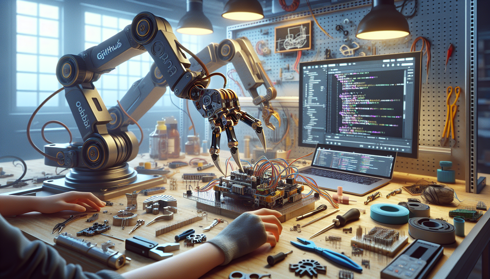

OpenClaw started as the kind of idea that keeps showing up in the back of your mind until you either build it or regret not trying. I wanted to create something practical, open, and extensible at the intersection of hardware, software, and AI. Not a polished marketing concept. Not a black-box product with hidden tradeoffs. Something real that developers, makers, and AI enthusiasts could inspect, modify, break, improve, and learn from.
That project became OpenClaw.
At its core, OpenClaw is an open-source build focused on a robotic claw-style system that can serve as a platform for experimentation in control systems, automation, computer vision, edge AI, and mechanical design. But the bigger story is not just what it does. It is why it exists, how it was built, and why I believe open GitHub builds matter more than ever.
This post is a behind-the-scenes look at what OpenClaw is, the motivation behind it, the design philosophy, the technical challenges, and why I decided to build it in the open.
OpenClaw is an open-source robotic claw project designed as a flexible development platform rather than a closed-end gadget. The idea is simple: build a mechanical grasping system that can be controlled, programmed, and extended by anyone who wants to experiment with robotics and AI-driven interaction.
Depending on how you approach it, OpenClaw can be a lot of things:
What makes OpenClaw interesting to me is that it sits in the middle of several communities that do not always overlap enough: open-source software, hardware prototyping, and applied AI. A lot of people can write code. A lot of people can print parts. A lot of people can run machine learning models. Fewer projects try to combine those worlds into something approachable and reproducible.
That is what I wanted OpenClaw to become.
The short answer is that I built OpenClaw because I wanted a project that felt honest.
There are plenty of impressive robotics demos online, but many of them are hard to reproduce, undocumented, expensive, or optimized mainly for presentation. I was more interested in the messy middle: the actual engineering process. The failed prints. The weird servo behavior. The software abstractions that looked elegant until they touched real hardware. The practical decisions that turn an idea into a working system.
I also kept seeing a gap between AI excitement and physical computing reality. A lot of AI conversation stays trapped in dashboards, APIs, and browser tabs. That is useful, but I wanted to build something that moved in the real world. Something where software decisions had mechanical consequences. Something where perception, control, and physical constraints all mattered at the same time.
OpenClaw became my way of exploring that gap.
I built it because I wanted:
In other words, OpenClaw is not just a robotic claw. It is a framework for experimentation.
From the beginning, I knew I did not want OpenClaw to be over-engineered in a way that made it inaccessible. At the same time, I did not want it to be so simplified that it stopped being useful. That balance shaped almost every design choice.
The core philosophy behind OpenClaw is built around a few principles:
This philosophy affected everything from part selection and code structure to naming conventions and documentation. I wanted OpenClaw to feel like something another builder could actually pick up and continue, not just admire from a distance.
One of the biggest reasons OpenClaw matters to me is that it creates a physical platform for AI experimentation. AI gets much more interesting when it has to deal with uncertainty, latency, limited compute, and the unpredictability of real-world objects.
With OpenClaw, AI is not the product. It is an optional layer that makes the platform more capable.
That distinction is important. I did not want to force the project into being an "AI thing" just because AI is trending. Instead, I wanted to create a system where AI could be meaningfully applied in ways that developers could test and extend.
Some obvious AI-related directions include:
What excites me most is that OpenClaw can act as a bridge between software-native AI builders and hardware-native robotics builders. If you have worked mainly with models and APIs, OpenClaw gives you a way to see how intelligence interacts with motors, geometry, timing, and failure. If you come from hardware, it gives you a framework for integrating modern AI capabilities in a practical way.
That combination feels increasingly important as AI moves from screens into physical systems.
Every build looks cleaner in retrospect than it felt in the moment. OpenClaw was no exception.
One of the reasons I wanted to write this post is because the real story of a project like this is not just the concept. It is the friction. Mechanical alignment issues. Firmware edge cases. Parts that technically fit but perform badly under load. Documentation that makes sense to you today and becomes confusing two weeks later.
Some of the hardest parts of building OpenClaw were not glamorous:
There is also a psychological challenge in building in public. When you share a GitHub project early, you are exposing unfinished thinking. You are letting people see the rough edges. But that is also where the value is. The rough edges are educational. They show the actual path, not just the polished endpoint.
I think more builders should feel comfortable publishing projects before they are "done." OpenClaw exists partly as an argument for that mindset.
GitHub is not just where the source code lives. For OpenClaw, it is the project's memory.
I chose to build OpenClaw openly because open development creates a better feedback loop. It invites collaboration, catches mistakes earlier, and makes the project more durable than if it only existed on one machine or in one person's head. It also helps other builders skip unnecessary dead ends.
Publishing the source, design decisions, and iteration history does a few important things:
Open-source hardware and software projects are powerful because they compound. One person builds the base. Another improves the control loop. Someone else adds a vision module. Another contributor redesigns a bracket or optimizes the firmware. Over time, the project becomes more than the original intention.
That is the kind of ecosystem I would love OpenClaw to support.
Right now, OpenClaw is a build, a repository, and a direction. But the long-term goal is bigger than a single prototype.
I want OpenClaw to become a useful starting point for anyone interested in open robotics, AI-enabled hardware, and maker-driven experimentation. I want it to be something a developer can fork, a student can learn from, a maker can physically build, and an AI enthusiast can use as a real-world test platform.
I also hope it helps normalize a more transparent style of technical building online. More process. More documentation. More source code. Less pretending that good projects emerge fully formed.
If OpenClaw succeeds, it will not be because I built a perfect robotic claw. It will be because I built something open enough for other people to make better.
So what is OpenClaw, really? It is an open-source robotic claw platform, yes. But more than that, it is a builder's project created to explore what happens when mechanical systems, software engineering, and AI meet in a practical, transparent way.
I built OpenClaw because I wanted a project that was useful, extensible, and real. I wanted to work on something physical. I wanted to share the process, not just the outcome. And I wanted to create a platform that other developers and makers could actually build on.
If you are interested in robotics, open-source hardware, GitHub builds, or AI in the physical world, OpenClaw is exactly the kind of project I think is worth following.
Follow the OpenClaw build on GitHub and see the full source code.